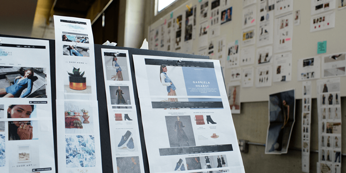
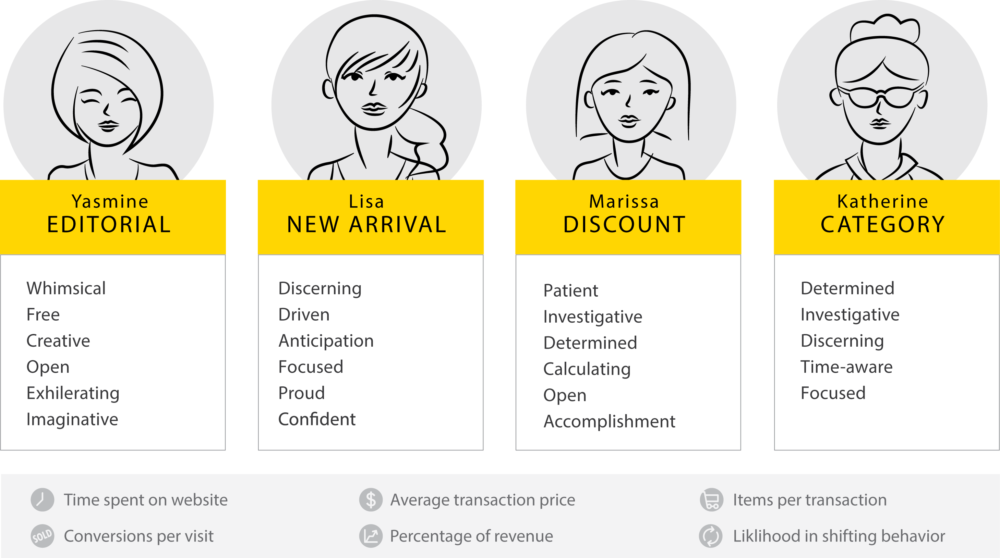
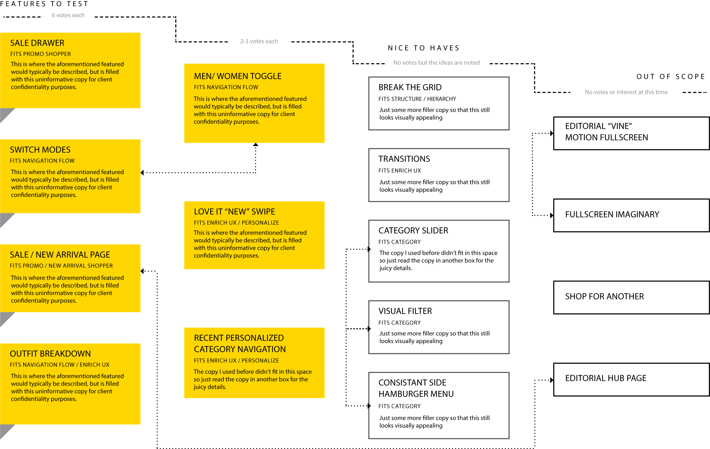
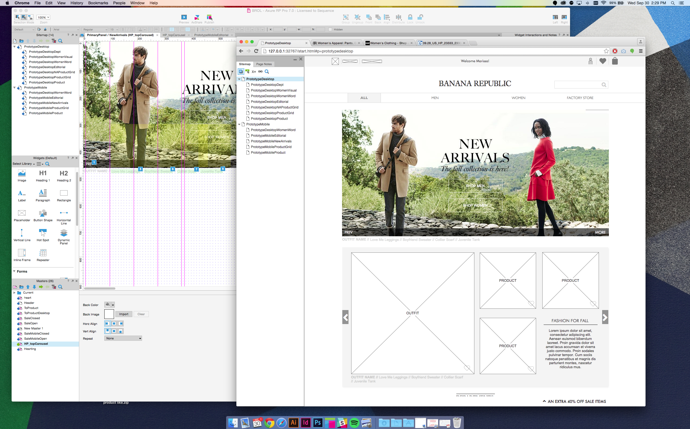
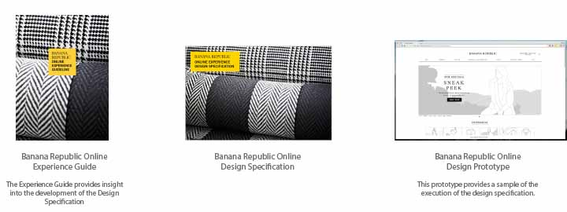

Banana Republic
Banana Republic is a major American clothing and jewellery retailer owned by the multinational coropration Gap Inc. During my term at Sequence, I was given the opportunity to help reimagine their online shopping experience. As the sole Interaction Designer on the project, I worked closely with a fantastic team comprising of designers, marketers and engineers from Sequence, Banana Republic and Gap Inc. Working on a tight schedule, we delivered a fully responsive web prototype and accompanying specifications and a detailed user experince guideline.
Problem
Banana Republic Online (BROL for short) was experiencing a large drop off rate around product and purchase screens and almost no mobile engagement.
Constraints
Since BR is part of the Gap Inc. family, there were strict limitations on the design of BROL. These rules are in place to ensure that the fluid experience cross BR and her sister stores was maintianed. As a result the main navigation, photography and footer could not be altered.All social content and affiliations with the Gap/Old Navy/Athleta brand were mandatory.
Process
Site Audit
An indepth site audit of the current (past) BROL revealed the following pain points:
- Lack of navigation - except for the main navigation mandated by Gap Inc., it was very impossible to navigate the site
- Lack of experience continuity - the site was full of end points where the user was forced to navigate backwards to continue shopping
- Poor product discovery - specific products were only reveled three levels down from the homepage
- Poor mobile experience - the site was not responsive and therefore there existed almost no mobile web experience
- Too much emphasis on Sale the majortiy of interactive pieces and headlines on the home and department pages were promotional titles
The last pain point came directly from the BR brand designers. In the new iteratin of the site, they were hoping to establish BR as a more high retailer rather than the discount shop their site portrays them to be.
Market Research
Extensive research of both competitors and industry leaders was conducted to gather a collection of the BR and Gap Inc. team's favorite experiences. Specific focus was placed on discovering sites that solved the pain points of BROL. The most popular sites were further scrutinized to identify the reasons they were considered successful. 
BROL Research Walls
During this discovery phase, it became clear that the BR team did not have a clear set of high level goals for their site. In order to provide more direction to the project, Sequence created user personas and experience pillars to guide decisions.
Personas
Using the data insights and user information from BROL, I helped create detailed personas for the BROL shoppers. Users were segmented based on their shopping behaviours with specific focus placed on their individual goals and influential conversion metrics (outlined below). The ideal shopping experience and their importance to BR was also included in each persona.
Banana Republic online shopper personas
These personas helped guide the team in decisition making and ideation. "Is this for her?" became a very common question thrown around in our worksessions and sprints.
Designing for these very conflicting personas was a big challenge. While BR hoped to move away from their discount shopping experience (satisfied the Disount shopper), it was discovered that she contributed to the majority of their revenue and therefore her experience was still a priority.
Ideation
Using both the personas and research the Sequence team developed an extensive list of possible solutions to the initial pain points. These were organized by feasibility, importance to the user, importance to the business and which pain point they solved. The development of this list was an iterative process where each was refined, removed, added in turn with input from the BROL and Gap Inc. designers and engineers.
Banana Republic online shopper personas
In order to assist in organizing the proposed solutions, BR experience pillars were developed. The helped ensure that the BR, Gap Inc. and Sequence team were aligned on the goal of the project.
Prototyping
The solutions developed in the ideation stage were all prototyped at different levels of fidelity throughout the organization process. While all the prototypes were initially created with Axure and good old pen and paper, when it came to the final stages, we found that none of these tools could demonstrate responsive solutions. I then proposed and created a fully responsive HTML/CSS prototype to properly demonstrate the final list of desired features/solutions. 
Deliverables
The final deliverables for BR included a fully responsive test-ready prototype and accompanying Experience Specification as well as an Experience Design Guide. The specification was a detaile. The Experience Guideline summarized the project findings for future use by the BR team. To see the full project, please contact me!
Results
Some of the features I designed are in the BROL site live now!